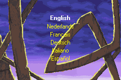

Lord of the Rings, The - The Two Towers (USA, Europe) (En,Fr,De,Es,It,Nl)
EEPROM 4K Save Format Spec gbakit Built-In
Cartridge Identity
- Game Code
ALPE(FamilyALP)- Header Title
TWO TOWERS- Maker / Revision
69/ rev0- ROM Size
- 16.0 MiB (16,777,216 B)
- Save Media
EEPROM 4K- SHA-256
0c74d49252fce1e7ce76b89810cdced6b0d374e6bfcef8fe910891b09d80ac79- Engine / SDK Group
comm-004(98 families)
Screenshots


Battery Save Format Specification
Open Full Save Format SpecDownload Sample .sav (512 B)Download save-format.json
- Specification Coverage
- 13 mapped fields · 2 verified checksum(s) · Confidence: MEDIUM
- gbakit Built-In Support
- Built-in (ALPE)
- Emulator Verification
- Checksum enforced: Yes · Repaired save accepted: Yes · Visual delta on edit: Yes
gbakit save verify ALPE save.sav
gbakit save decode ALPE save.sav
gbakit save fix ALPE damaged.sav -o repaired.savObserved Battery Save Layout
- Fill Byte & Active Size
0x00fill · 13–14 / 512 B active (entropy 3.81 bits/B)- Active Offset Ranges
0x0–0x7,0x9–0xB,0x16,0x18–0x19(4 total)- ASCII Magic / Headers
30ABGROL- Observed Variable Regions
- 2 bytes across 2 spans:
0x16,0x18 - Candidate Checksum/Counter Spans
0x16,0x18- Integrity Check
- Confirmed at
0x16
ROM Assets, Compression & Audio
- BIOS Compression
- LZ77 (
0x10): 232 streams · RLE (0x30): 124 streams - ROM Pointer Tables
- 26 tables (5 pointing to validated compressed streams)
- SDK Backup Tags
EEPROM_V122
Hardware MMIO Subsystems
ppu_display0x8001eb8,0x800de14,0x800e4b8,0x800e544,0x8013664
Regional Variants & Revisions (Family ALP)
- Lord of the Rings, The - Futatsu no Tou (Japan) (
ALPJ, 16 MiB)